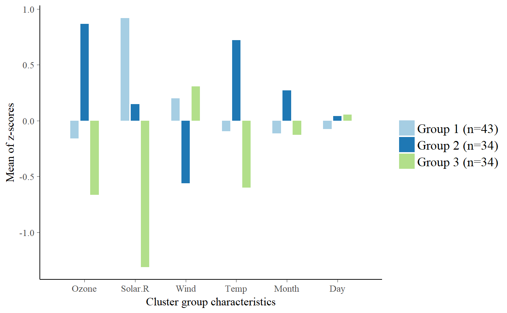
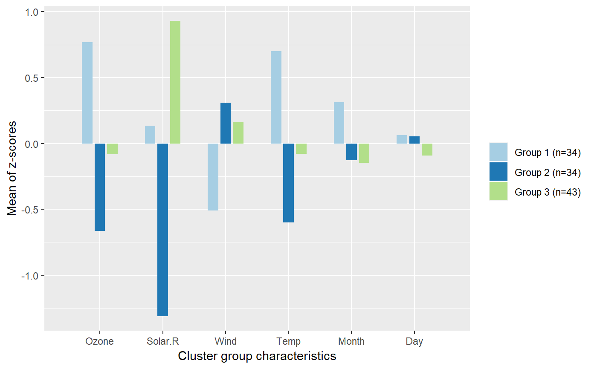

Compute a quick kmeans or hierarchical cluster analysis and displays "cluster characteristics" as plot.
sjc.qclus(data, groupcount = NULL, groups = NULL, method = c("kmeans", "hclust"), distance = c("euclidean", "maximum", "manhattan", "canberra", "binary", "minkowski"), agglomeration = c("ward", "ward.D", "ward.D2", "single", "complete", "average", "mcquitty", "median", "centroid"), iter.max = 20, algorithm = c("Hartigan-Wong", "Lloyd", "MacQueen"), show.accuracy = FALSE, title = NULL, axis.labels = NULL, wrap.title = 40, wrap.labels = 20, wrap.legend.title = 20, wrap.legend.labels = 20, facet.grid = FALSE, geom.colors = "Paired", geom.size = 0.5, geom.spacing = 0.1, show.legend = TRUE, show.grpcnt = TRUE, legend.title = NULL, legend.labels = NULL, coord.flip = FALSE, reverse.axis = FALSE, prnt.plot = TRUE)
| data | A data frame with variables that should be used for the cluster analysis. |
|---|---|
| groupcount | Amount of groups (clusters) used for the cluster solution. May also be
a set of initial (distinct) cluster centres, in case
|
| groups | Optional, by default, this argument is |
| method | Method for computing the cluster analysis. By default ( |
| distance | Distance measure to be used when |
| agglomeration | Agglomeration method to be used when |
| iter.max | Maximum number of iterations allowed. Only applies, if
|
| algorithm | Algorithm used for calculating kmeans cluster. Only applies, if
|
| show.accuracy | Logical, if |
| title | character vector, used as plot title. Depending on plot type and function,
will be set automatically. If |
| axis.labels | character vector with labels used as axis labels. Optional argument, since in most cases, axis labels are set automatically. |
| wrap.title | numeric, determines how many chars of the plot title are displayed in one line and when a line break is inserted. |
| wrap.labels | numeric, determines how many chars of the value, variable or axis labels are displayed in one line and when a line break is inserted. |
| wrap.legend.title | numeric, determines how many chars of the legend's title are displayed in one line and when a line break is inserted. |
| wrap.legend.labels | numeric, determines how many chars of the legend labels are displayed in one line and when a line break is inserted. |
| facet.grid |
|
| geom.colors | user defined color for geoms. See 'Details' in |
| geom.size | size resp. width of the geoms (bar width, line thickness or point size, depending on plot type and function). Note that bar and bin widths mostly need smaller values than dot sizes. |
| geom.spacing | the spacing between geoms (i.e. bar spacing) |
| show.legend | logical, if |
| show.grpcnt | Logical, if |
| legend.title | character vector, used as title for the plot legend. |
| legend.labels | character vector with labels for the guide/legend. |
| coord.flip | logical, if |
| reverse.axis | Logical, if |
| prnt.plot | logical, if |
(Invisibly) returns an object with
data: the used data frame for plotting,
plot: the ggplot object,
groupcount: the number of found cluster (as calculated by sjc.kgap)
classification: the group classification (as calculated by sjc.cluster), including missing values, so this vector can be appended to the original data frame.
accuracy: the accuracy of group classification (as calculated by sjc.grpdisc).
Following steps are computed in this function:
If method = "kmeans", this function first determines the optimal group count via gap statistics (unless argument groupcount is specified), using the sjc.kgap function.
A cluster analysis is performed by running the sjc.cluster function to determine the cluster groups.
Then, all variables in data are scaled and centered. The mean value of these z-scores within each cluster group is calculated to see how certain characteristics (variables) in a cluster group differ in relation to other cluster groups.
These results are plotted as graph.
This method can also be used to plot existing cluster solution as graph witouth computing
a new cluster analysis. See argument groups for more details.
See 'Note' in sjc.cluster
Maechler M, Rousseeuw P, Struyf A, Hubert M, Hornik K (2014) cluster: Cluster Analysis Basics and Extensions. R package.
# NOT RUN { # k-means clustering of mtcars-dataset sjc.qclus(mtcars) # k-means clustering of mtcars-dataset with 4 pre-defined # groups in a faceted panel sjc.qclus(airquality, groupcount = 4, facet.grid = TRUE) # }# k-means clustering of airquality data # and saving the results. most likely, 3 cluster # groups have been found (see below). airgrp <- sjc.qclus(airquality)#> #>#># "re-plot" cluster groups, without computing # new k-means cluster analysis. sjc.qclus(airquality, groupcount = 3, groups = airgrp$classification)